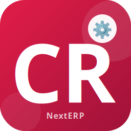

NextERP - Conformity Certificate
NextERP - Conformity Certificate
Overview
nexterp_conformity_report adds a Certificate of Conformity
(declarație de conformitate) PDF report on stock.picking. The report
is attached as a print binding on the picking form, so it is available
from the standard Print menu for any delivery in the Done state.
The certificate is structured around the data already present on the delivery: customer information, picking number, dispatch date, the related sale order reference (and the customer order reference, when filled). It then lists every move line of the picking — product name, custom customer product code, lot number, unit of measure, quantity shipped and minimum shelf life (lot expiration date) — followed by a boilerplate declaration in which the issuing company guarantees that the delivered products meet food-safety regulations.
A signature block for the agent, delegate (with means of transport),
and a "shipment made in our presence" line are rendered at the bottom
so the document is ready to be signed at hand-over. The module depends
on sale_stock and on l10n_ro_stock_picking_comment_template.
Built & supported by NextERP Romania
Romanian Odoo specialists, here for the long run — from implementation to localization and day-to-day production support.
What we do
Features
- Adds a new QWeb-PDF action Conformity Report on
stock.picking, available as a print binding (binding_type=report) from the picking form Print menu. - Header block prints the customer address, VAT number (using the
fiscal country's VAT label) and the trade-register number (
nrc). - Title block shows the picking number, the dispatch date (uses
l10n_ro_accounting_datewhen present, otherwisedate_done/scheduled_date) and the related sale order or customer order reference (client_order_ref). - Move-line table renders one row per
move.linewith: row number, product name, customer-specific product code (read fromproduct.customer_idswhen the field exists), lot number, UoM, quantity done and lot expiration date as minimum shelf life. - Conformity declaration paragraph cites the company name, city and street and the picking name + date.
- Footer signature block with agent details, sale order reference and
a delegate panel (name, ID, means of transport
l10n_ro_mean_transp, date / hour and dual signature lines). - Report is rendered in the company partner language; the file name
follows the pattern
Conformity_Report - <picking name>.pdf. - The certificate body is only rendered for pickings in state
done.
Configuration
The report is registered as ir.actions.report with
binding_model_id = stock.picking, so no specific configuration menu
is exposed. After installing the module, the Conformity Report
entry appears automatically under the Print menu of every transfer
form.
1. Company information
The declaration paragraph at the bottom of the PDF reads the issuing company partner. Make sure the following fields are filled, otherwise the corresponding parts of the sentence will print blank:
- Go to Settings -> Companies -> Companies (or Settings -> Users & Companies -> Companies).
- Open the company and verify:
- Name — printed at the start of the declaration.
- City and Street — printed in the company address part of the declaration.
2. Romanian localization fields (optional but recommended)
The template reads several optional Romanian-localization fields if they exist on the picking and partner. Filling them improves the output:
| Field | Source | Used for |
|---|---|---|
l10n_ro_accounting_date |
stock.picking |
Dispatch date in the header and declaration |
l10n_ro_delegate_id |
stock.picking |
Name of the delegate in the signature block |
l10n_ro_mean_transp |
stock.picking |
Means of transport in the signature block |
nrc |
res.partner |
Trade register number under the customer address |
vat |
res.partner |
VAT / Tax ID under the customer address |
3. Lot tracking
Quantities are listed from move_line_ids. For the Lot No. and
Minimum shelf life columns to be populated, the products must be
tracked by lot and the corresponding stock.lot records must carry an
expiration_date.
To install this module, you need to:
- clone the branch 17.0 of the repository https://github.com/NextERP-Romania/odoo-community
- add the path to this repository in your configuration (addons-path)
- update the module list
- search for "NextERP - Conformity Certificate" in your addons
- install the module
How it works
The Certificate of Conformity is intended to be printed together with the delivery slip whenever goods leave the warehouse and the customer requires a sanitary / food-safety declaration.
Printing the certificate
- Open a delivery from Inventory -> Operations -> Transfers (or from the sale order's Delivery smart button).
- Validate the picking so it reaches the Done state — the report
body only renders for
state == 'done'. - From the picking form, click Print -> Conformity Report.
- Odoo generates a PDF named
Conformity_Report - <picking name>.pdfand downloads it. The file can be attached to the delivery or sent to the customer.
What appears on the PDF
- Header: customer address, VAT, trade register.
- Title block: Certificate of Conformity, picking series / number, dispatch date, order number (sale order or customer reference).
- Move-line table: one row per move line, with row number, product, customer product code, lot number, UoM, quantity done and lot expiration date.
- Declaration: the issuing company guarantees that the listed products do not endanger life or health and comply with the sanitary / veterinary food-safety legislation in force.
- Signature block: agent, supplier code and sale order on the left; shipping information, delegate name, ID, means of transport, date / hour and signature lines on the right.
Language
The report is rendered with lang = company.partner_id.lang, so the
certificate language follows the company's own configured language
(useful when the customer language differs from the company language).
Versions
19.0.1.0.0 (2026-05-25)
- Changelog tracking starts at this release.
Discover the NextERP suite
Other modules from the same publisher, built to work together.
NextERP Romania
Odoo implementation, customization, Romanian localization and long-term support since 2018.